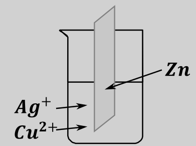
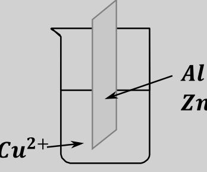
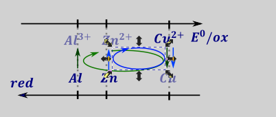

Kolejnym rodzajem zadań są zadania obliczeniowe związane z zmianą masy blaszki podczas reakcji z roztworem metalu, przykładem jest zadnie z zbioru zadań CKE:
Zadania tego typu robimy tabelką molową, w której umieszczamy mole reagentów (w zapisie jonowym) oraz ich masy, szczególnie dla blaszki. Dodatkowo w tabelce umieszczamy dodatkowy wiersz odpowiedzialny za całkowitą masę blaszki – jest on sumą mas metali znajdujących się na blaszce. Oczywiście, odpowiednie mole i masy są związane z sobą wzorem: \(m = nM\), odpowiednio dla każdego metalu i każdych moli (początkowych, zmiany i końcowych). Dla reakcji ogólnej tabelka i zależności między komórkami mają postać ma postać:
\[\mathbf{aM}\mathbf{e}_{\mathbf{1}}\mathbf{+ bM}\mathbf{e}_{\mathbf{2}}^{\mathbf{a +}}\mathbf{\rightarrow aM}\mathbf{e}_{\mathbf{1}}^{\mathbf{b}^{\mathbf{+}}}\mathbf{+ bM}\mathbf{e}_{\mathbf{2}}\]
| \[\mathbf{M}\mathbf{e}_{\mathbf{1}}\] | \[\mathbf{M}\mathbf{e}_{\mathbf{2}}^{\mathbf{a +}}\] | \[\mathbf{M}\mathbf{e}_{\mathbf{1}}^{\mathbf{b +}}\] | \[\mathbf{M}\mathbf{e}_{\mathbf{2}}\] | \[\mathbf{suma\ mas}\] \[\mathbf{\ metali}\] |
|
|---|---|---|---|---|---|
| \[\mathbf{n}^{\mathbf{0}}\] | \[n_{Me_{1}}^{0}\] | \[n_{Me_{2}^{a +}}^{0}\] | \[n_{Me_{1}^{b +}}^{0}\] | \[n_{Me_{2}}^{0}\] | |
| \[\mathbf{m}^{\mathbf{0}}\] | \[m_{Me_{1}}^{0} =\] \[n_{Me_{1}}^{0}M_{Me_{1}}\] |
\[XXX\] | \[XXX\] | \[m_{Me_{2}}^{0} =\] \[n_{Me_{2}}^{0}M_{Me_{2}}\] |
\[\mathbf{m}_{\mathbf{blaszki}}^{\mathbf{0}}\] |
| \[\mathbf{\Delta n}\] | \[{\Delta n}_{Me_{1}}^{\ } =\] \[- ax\] |
\[{\Delta n}_{Me_{2}^{a +}}^{\ } =\] \[- bx\] |
\[{\Delta n}_{Me_{1}^{b +}}^{\ } =\] \[ax\] |
\[{\Delta n}_{Me_{2}}^{\ } =\] \[bx\] |
|
| \[\mathbf{\Delta m}\] | \[{\Delta m}_{Me_{1}}^{\ } =\] \[- axM_{Me_{1}}\] |
\[XXX\] | \[XXX\] | \[\Delta m_{Me_{2}}^{\ } =\] \[+ bxM_{Me_{2}}\] |
\[\mathbf{\Delta m}_{\mathbf{blaszki}}\] |
| \[\mathbf{n}^{\mathbf{k}}\] | \[n_{Me_{1}}^{K}\] | \[n_{Me_{2}^{a +}}^{K}\] | \[n_{Me_{1}^{b +}}^{K}\] | \[n_{Me_{2}}^{K}\] | |
| \[\mathbf{m}^{\mathbf{k}}\] | \[m_{Me_{1}}^{K} =\] \[m_{Me_{1}}^{0} + {\Delta m}_{Me_{1}}^{\ }\] |
\[XXX\] | \[XXX\] | \[m_{Me_{2}}^{K} =\] \[m_{Me_{2}}^{0} + \Delta m_{Me_{2}}^{\ }\] |
\[\mathbf{m}_{\mathbf{blaszki}}^{\mathbf{K}}\mathbf{=}\] \[m_{Me_{1}}^{K} + m_{Me_{2}}^{K}\] |
Zrobienie takiej tabelki jest żmudne i monotonne, ale rozwiązanie zadanie polega na przypisaniu odpowiednim komórkom odpowiednich wartości podanych z zadania.
Blaszkę z glinu o masie 10.80 g o odpowiednio przygotowanej powierzchni zanurzono w wodnym roztworze \(Cu\left( NO_{3} \right)_{2}\), utrzymując odpowiednie \(pH\) tego roztworu. Po pewnym czasie stwierdzono, że powierzchnia blaszki znajdująca się w roztworze pokryła się różowym nalotem o metalicznym połysku, a barwa roztworu stała się mniej intensywna, turkusowa, ale roztwór pozostał klarowny i nie stwierdzono w nim wytrącenia żadnego osadu. Następnie blaszkę wyjęto z roztworu, osuszono i ponownie zważono. Jej masa wyniosła 12.17 g. Zaobserwowane zmiany pozwoliły stwierdzić, że w czasie doświadczenia zachodziła reakcja chemiczna, której przebieg opisuje równanie:
Tabelka ta dla opisanego powyżej zadania wygląda następująco:
| \[Cu^{2 +}\] | \[Al\] | \[Cu\] | \[Al^{3 +}\] | \(suma\) | |
|---|---|---|---|---|---|
| \[n^{0}\] | \[\frac{10.8}{27} = 0.4\] | \[0\] | |||
| \[m^{0}\] | \[10.8\] | \[0\] | \[10.8\ \] | ||
| \[\Delta n\] | \[- 3x\] | \[- 2x\] | \[+ 3x\] | \[+ 2x\] | |
| \[\Delta m\] | \[- 2x*M_{Al} = - 2x*27 = - 54x\] | \[3x*63.6 = 190.8x\] | \[- 54x + 190.8x = 136.8x\] | ||
| \[n^{k}\] | \[0.4 - 2x\] | \[3x\] | |||
| \[m^{k}\] | \[(0.4 - 2x)*27\] | \[3x*63.6\] | \[10.8 + 136.8x\] |
I to jest praktycznie koniec zadania, bo zauważmy, że masa końcowa ma być \(12.17\). Przyrównanie tej wartości do właściwej komórki tabeli daje:
\[10.8 + 136.8x = 12.17\]
Z łatwością możem obliczyć wartość postępu reakcji, \(x:\)
\[x = 0.01\]
Który, po wstawieniu daje nam masę miedzi:
\[m_{Cu} = 3x*63.6 = 3*0.01*63.6 = 1.908\]
Analogicznie możemy rozwiązać kolejne zadanie:
Blaszkę miedzianą o masie 10g zanurzono w 0.1 molowym roztworze \(AgNO_{3}\). Po reakcji masa blaszki wynosiła 11 g. Oblicz skład procentowy blaszki po reakcji oraz stężenie jonów \(Ag^{+}\ \)po reakcji\(\ \)wiedząc, że objętość roztworu wynosiła \(200\ cm^{3}\)
Zadanie rozpoczynamy od zapisania reakcji samorzutnej:
\[2Ag^{+} + Cu \rightarrow 2Ag + Cu^{2 +}\]
Oraz obliczenia liczby moli początkowych \(n_{Ag^{+}} = cV = 0.1*0.2 = 0.02\)
| \[Ag^{+}\] | \[Cu\] | \[Ag\] | \[Cu^{2 +}\] | Suma mas metali | |
|---|---|---|---|---|---|
| \[n^{0}\] | \[0.02\] | \[\frac{10}{63.5} = 0.157\] | 0 | ||
| \[m^{0}\] | 10 | 0 | \[10\] | ||
| \[\Delta n\] | \[- 2x\] | \[- x\] | \[+ 2x\] | \[x\] | XXXXXXXXXX |
| \[\Delta m\] | \[{- M}_{cu}x = - 63.5x\] | \[M_{Ag}*2x\ = 107.8*2x\] | \[- 63.5x + 107.8*2x = 152.1x\] | ||
| \[n^{k}\] | \[0.02 - 2x\] | \[0.157 - x\] | \[2x\] | \[x\] | |
| \[m^{k}\] | \[(0.157 - x)63.5\] | \[107.8*2x\] | \[(0.157 - x)63.5 + 107.8*2x\] |
Z masy całkowitej widzimy, że możemy obliczyć \(x\) dla tabelki:
\[m_{sum}^{K} = (0.157 - x)63.5 + 107.8*2x = 11\]
\[10 + 152.1x = 11\]
\[x = 0.00657\]
Masę srebra obliczymy wstawiając x do odpowiedniej komórki tabeli
\[m_{Ag}^{K} = 107.8*2*0.00657 = 1.416\]
Zawartość procentową srebra uzyskamy dzieląc masę przez całą masę końcową blaszki:
\[c_{p}^{Ag} = \frac{1.416}{11}*100 = 12.9\%\]
Analogicznie ilość jonów \(Ag^{+}\) obliczymy wstawiając \(x\) w odpowiednią komórkę tabeli:
\[n_{Ag^{+}}^{K} = 0.02 - 2*0.00657 = 0.00686\]
Co umożliwia obliczenie stężenia końcowego jonów \(Ag^{+}\) jako :
\[\left\lbrack Ag^{+} \right\rbrack_{K} = \frac{n_{Ag^{+}}^{K}}{V} = \frac{0.00686}{0.2} = 0.0343\frac{mol}{dm^{3}}\]
Analogiczne, przykładowe zadania:
Blaszke Al o masie =10g umieszczono w \(0.1\ molowym\ ZnSO_{4}V = 0,5\ dm^{3}\). Po reakcji zawartość %_Al wynosiła 80%. Oblicz stęzenia molowe jonów w roztworze i masę koncową blaszki
Blaszke Cu zanurzono w roztworze \(Ag_{2}SO_{4}\left( 0,01\ molowy,\ 2dm^{3} \right)\).. Oblicz masę poczatkową blaszki wiedząc że przyrost masy blaszki wyniosl 20%, a stosunek stęzenien jonów Ag do Cu w roztworze koncowym był równy 4/1
Blaszke Zn zanurzono w \(Ag^{+}.\) Oblicz jaki jest skład % blaszki wiedząc, że jej masa przyrosła o 30%
Jeżeli w roztworze masz jony dwóch metali, to osadzają się one na blaszce od metalu o najwyższym potencjale. Metal o niższym potencjale, jeżeli może, zaczyna się osadzać w momencie, gdy (praktycznie) całkowicie przereaguje metal o wyższym potencjale.
\[\mathbf{Zn\ A}\mathbf{g}^{\mathbf{+}}\mathbf{\ C}\mathbf{u}^{\mathbf{2 +}}\]

W przypadku tego doświadczenia najpierw osadzi się srebro, a dopiero potem, praktycznie po całkowitym przereagowaniu miedź, gdyż potencjał redukcji srebra jest większy niż potencjał redukcji miedzi: \(E_{Ag} > E_{Cu}\).
Jeżeli na blaszce są dwa różne metale i oba maja styk z roztworem to pierwszy reaguje ten o niższym potencjale, a następnie po całkowitym przereagowaniu ten o wyższym potencjale. Zasadę tę stosujemy zresztą przy zabezpieczaniu metali przed korozją.

W przypadku tego doświadczenia najpierw roztwarza się glin, a dopiero po jego całkowitym przereagowaniu cynk, gdyż \(E_{Al} < E_{Zn}\)
Inaczej możemy wykorzystać graf form utlenionych i zredukowanych – najpierw przebiega reakcja według największego możliwego kółka mówiącego o procesie samorzutnym, a dopiero po całkowitym przereagowaniu jednego z reagentów zmniejszamy kółko. Dla powyższego układu graf wyglądać będzie następująco:

Widzimy, że najpierw zachodzi reakcja „zielona” – utlenianie glinu do jonu \(Al^{3 +}\), a dopiero po wyczerpaniu się glinu zaczyna zachodzić utlenianie cynku. W przypadku wcześniejszego redukcji jonów miedzi reakcja się stopuje – nie ma już innych utleniaczy.